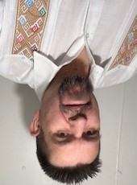

| 
Ricardo, a skilled and versatile professional, originally hails from Mexico. Armed with a degree in Computer Engineering, he graduated in 2008 and embarked on a dynamic career journey.
For the initial five years, Ricardo honed his software development skills at Medisist, a specialized company in medical technology.
His noteworthy contributions included being part of a team that designed a groundbreaking shirt capable of monitoring health metrics such as heart rates and electrocardiograms in real-time. The shirt could instantly notify doctors of any anomalies and, in emergencies, trigger automatic calls to the nearest hospital.
In 2015, Ricardo made a significant move to Wisconsin, where he took on the role of Team Leader at a frozen pizza factory in Little Chute, showcasing his adaptability.
Over the course of four years, he successfully led his team in a dynamic production environment.
In 2020, Ricardo made a bold entrepreneurial move by acquiring a restaurant in the quaint town of Whitelaw. Not just limited to management, he passionately engages in the culinary aspect, personally overseeing much of the cooking. Concurrently, he has taken classes to further his education with the aspiration of returning to programming, a field he genuinely enjoys. Ricardo's diverse professional journey reflects his adaptability, leadership, and a continuous pursuit of knowledge.
|
Movies List
- Secret Headquarters
- The Gray Man
- Black Panther: Wakanda Forever
- The Northman
- The Woman King
- Top Gun: Maverick
- Ambulance
- The Lost City
- Bullet Train
- Avatar: The Way of Water
|